ARSIP TAMPILAN · 22 OKTOBER 2026
Cekpedia — Before
Dokumentasi sebelum perbaikan desain. Klik gambar untuk membuka PNG ukuran penuh (1080 × 2340). Layout, ikon, warna, dan aset preview diambil dari APK rilis lama, bukan demo rekonstruksi.
Bedakan sumber: gambar 01 adalah screenshot aplikasi asli yang dijalankan. Gambar 02–22 adalah render layout asli melalui penampil offline terpisah. Daftar menggunakan data contoh dan header drawer memakai isi bawaan APK; banner Firebase tidak dimuat dan peta memakai placeholder berlabel. Screenshot ini mendokumentasikan tampilan, bukan bukti bahwa semua fitur backend berfungsi.
Profil, Share, dan Send di kode asli hanya menampilkan pesan “Fitur masih dalam pengembangan”. Near Me belum memiliki aksi. Gambar profil placeholder disertakan sebagai referensi layout yang belum selesai.
Ringkasan gambar: Lembar 1 · Lembar 2 · Lembar 3
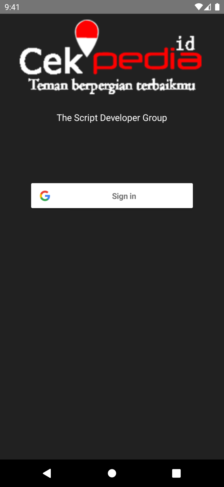
APK ASLILogin · APK asli dijalankan
Dijalankan langsung dari cekpedia.apk; belum login Google.
Unduh PNG asli
 PREVIEW LAYOUT ASLI
PREVIEW LAYOUT ASLIBeranda
Banner Firebase tidak dimuat.
Unduh PNG asli
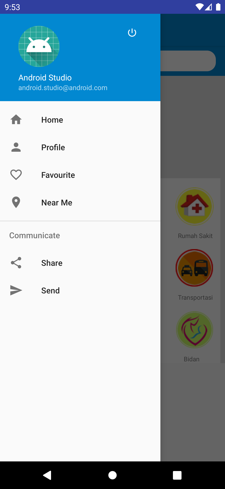
PREVIEW LAYOUT ASLIMenu samping
Header bawaan APK; data akun tidak dimuat.
Unduh PNG asli
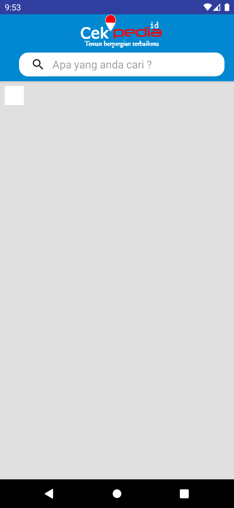
PREVIEW LAYOUT ASLIPencarian
Keadaan awal tanpa hasil pencarian.
Unduh PNG asli
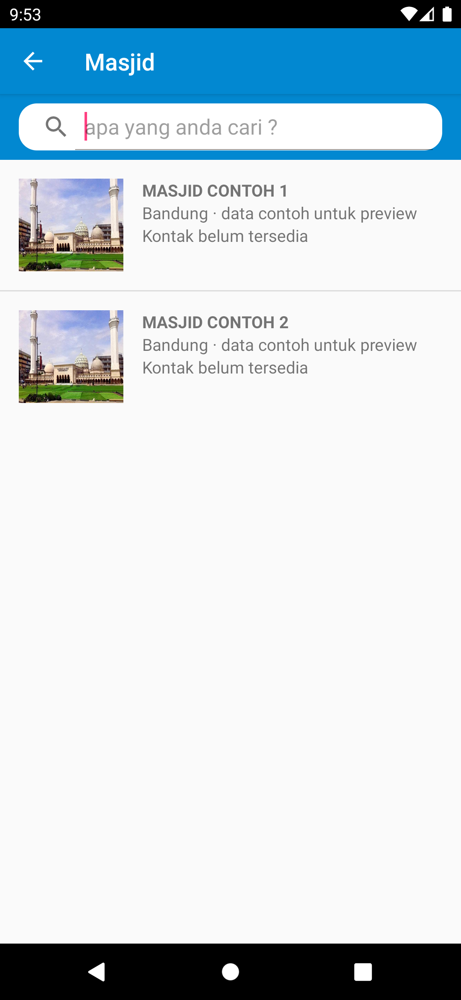
PREVIEW LAYOUT ASLIMasjid
Dua data contoh dan foto bawaan APK; bukan data Firebase.
Unduh PNG asli
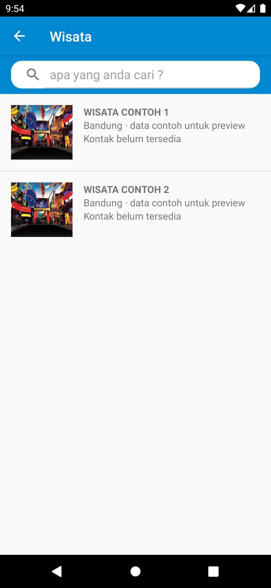
PREVIEW LAYOUT ASLIWisata
Dua data contoh dan foto bawaan APK; bukan data Firebase.
Unduh PNG asli
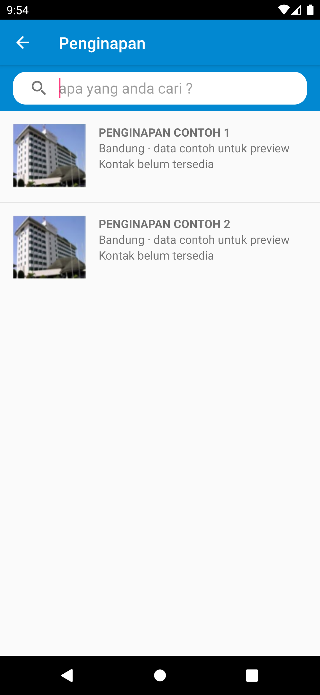
PREVIEW LAYOUT ASLIPenginapan
Dua data contoh dan foto bawaan APK; bukan data Firebase.
Unduh PNG asli
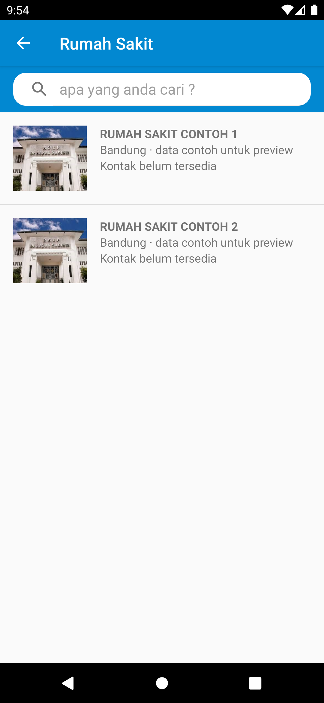
PREVIEW LAYOUT ASLIRumah Sakit
Dua data contoh dan foto bawaan APK; bukan data Firebase.
Unduh PNG asli
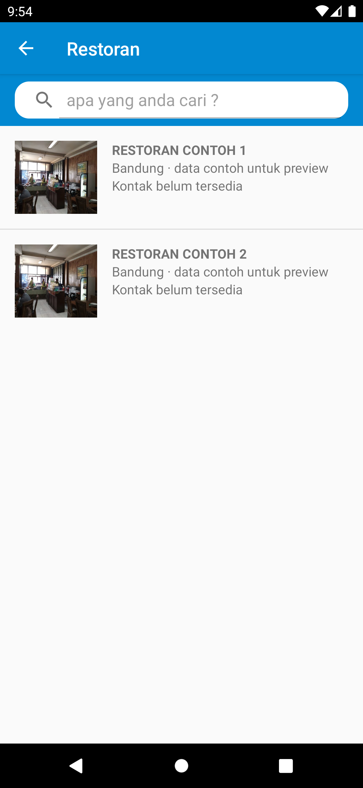
PREVIEW LAYOUT ASLIRestoran
Dua data contoh dan foto bawaan APK; bukan data Firebase.
Unduh PNG asli
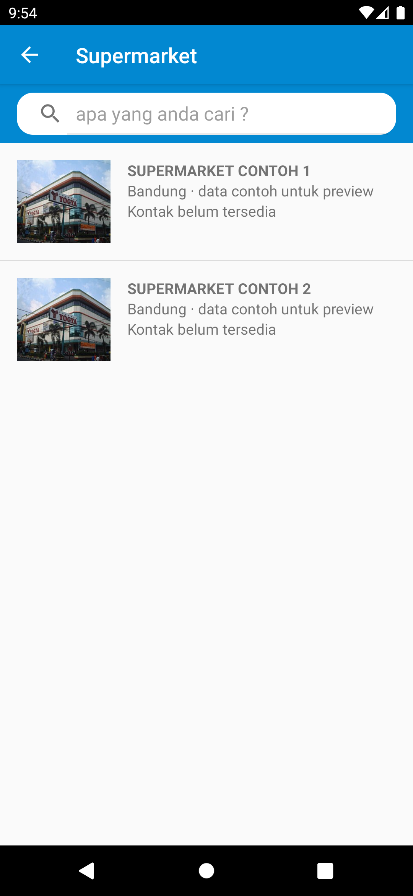
PREVIEW LAYOUT ASLISupermarket
Dua data contoh dan foto bawaan APK; bukan data Firebase.
Unduh PNG asli
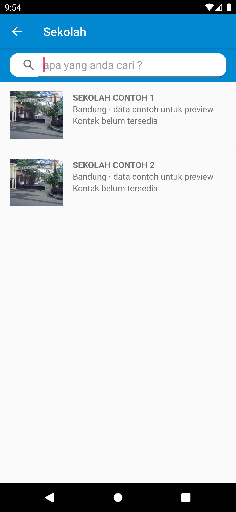
PREVIEW LAYOUT ASLISekolah
Dua data contoh dan foto bawaan APK; bukan data Firebase.
Unduh PNG asli
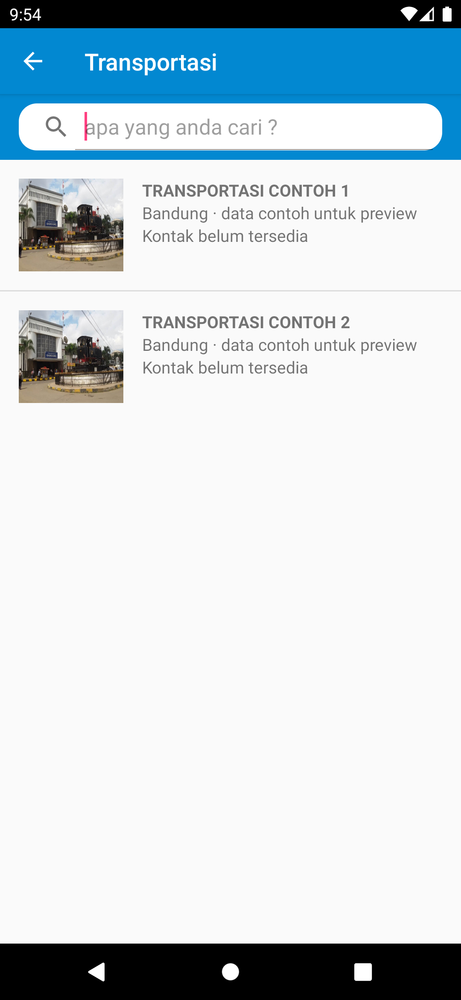
PREVIEW LAYOUT ASLITransportasi
Dua data contoh dan foto bawaan APK; bukan data Firebase.
Unduh PNG asli
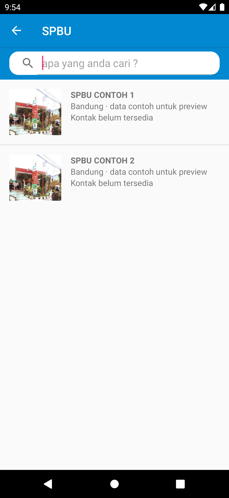
PREVIEW LAYOUT ASLISPBU
Dua data contoh dan foto bawaan APK; bukan data Firebase.
Unduh PNG asli
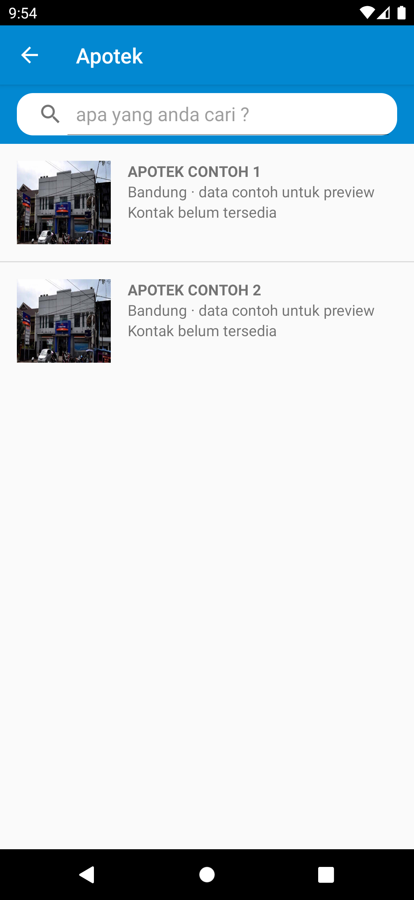
PREVIEW LAYOUT ASLIApotek
Dua data contoh dan foto bawaan APK; bukan data Firebase.
Unduh PNG asli
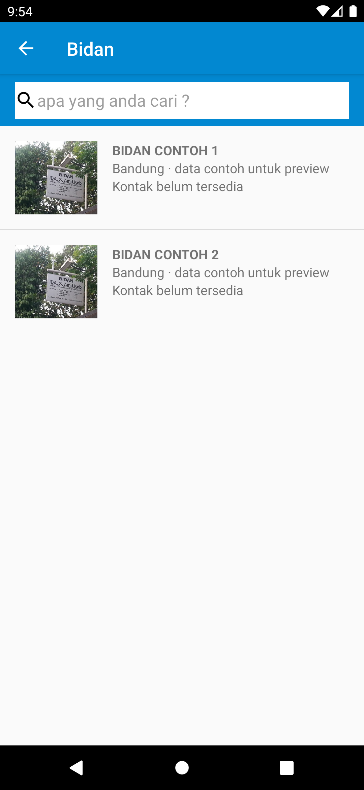
PREVIEW LAYOUT ASLIBidan
Dua data contoh dan foto bawaan APK; bukan data Firebase.
Unduh PNG asli
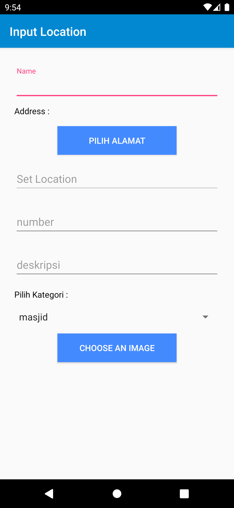
PREVIEW LAYOUT ASLIInput lokasi · atas
Form asli. Unggah dan pemilih lokasi tidak dijalankan.
Unduh PNG asli
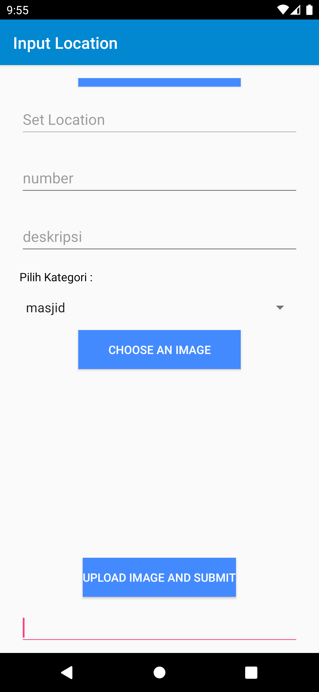
PREVIEW LAYOUT ASLIInput lokasi · bawah
Bagian bawah form asli.
Unduh PNG asli
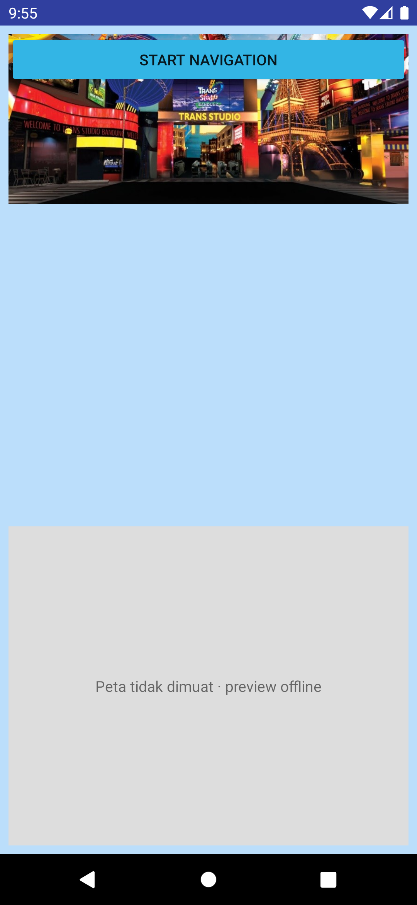
PREVIEW LAYOUT ASLIDetail tempat
Data contoh; peta diganti area abu-abu berlabel offline.
Unduh PNG asli
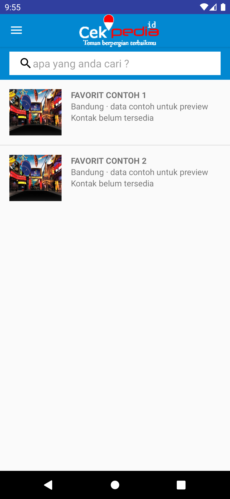
PREVIEW LAYOUT ASLIFavorit
Isi daftar contoh; bukan favorit akun asli.
Unduh PNG asli
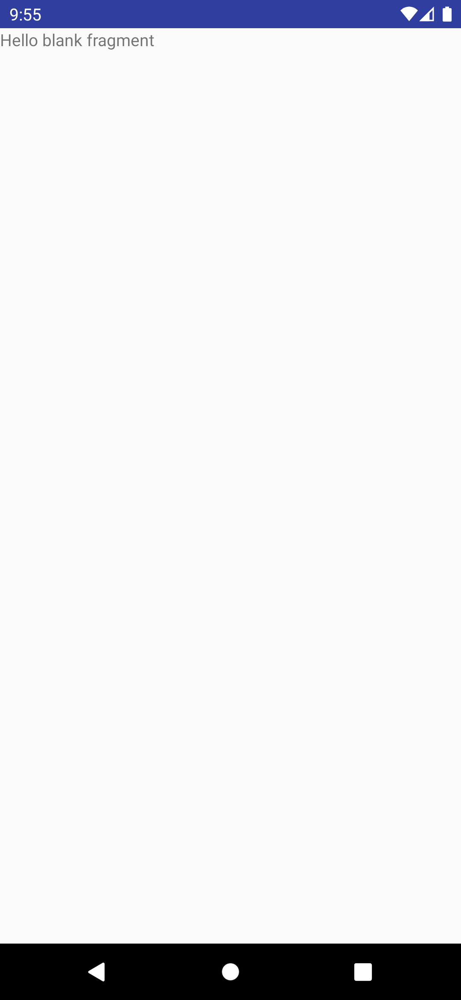
PREVIEW LAYOUT ASLILayout profil belum selesai
Layout fragment yang masih placeholder; menu Profil aslinya hanya menampilkan pesan pengembangan.
Unduh PNG asli
 PREVIEW LAYOUT ASLI
PREVIEW LAYOUT ASLILogin · APK rilis
Layout dari app/release/app-release.apk; berbeda dengan cekpedia.apk di root.
Unduh PNG asli
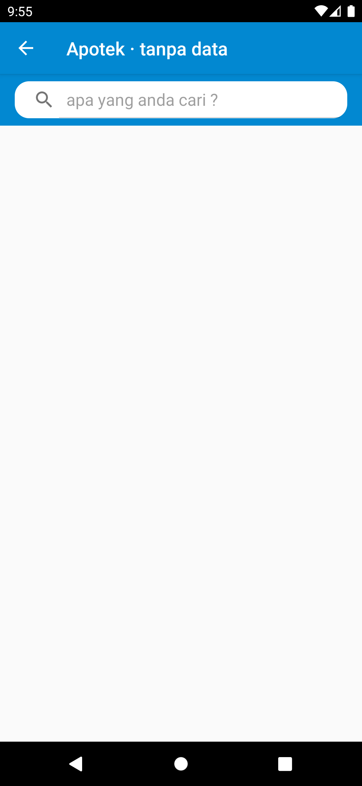
PREVIEW LAYOUT ASLIApotek · tanpa data
Keadaan layout kosong tanpa overlay loading Firebase.
Unduh PNG asli